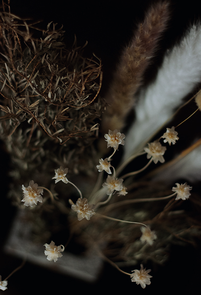
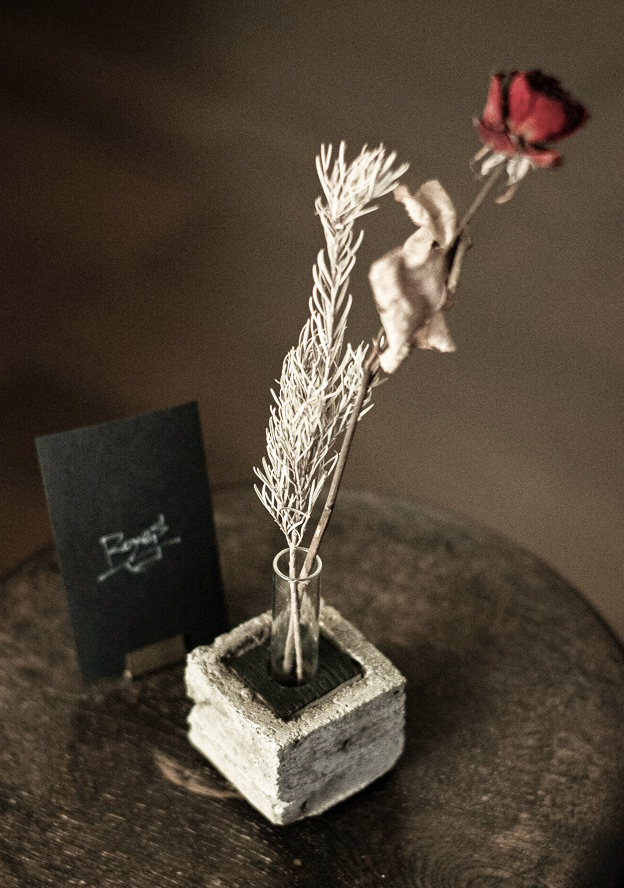
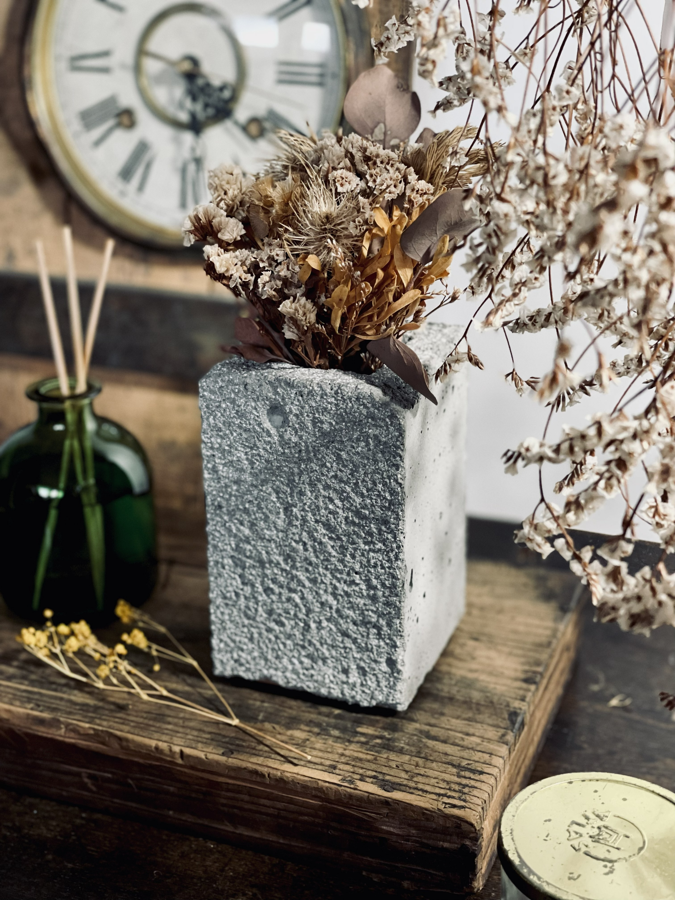
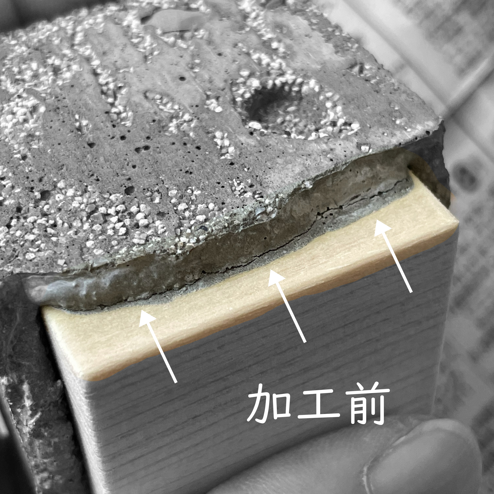
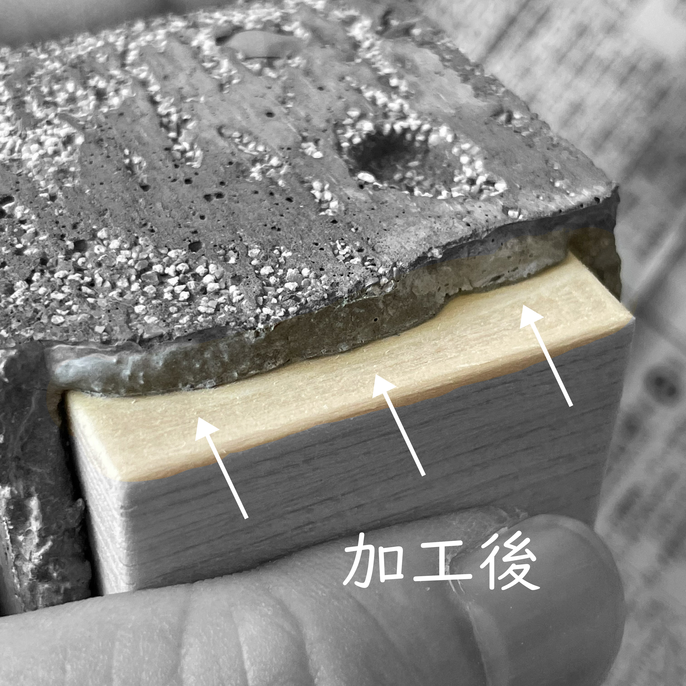
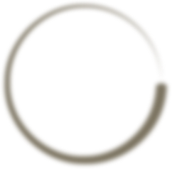

Dignified presence
IT'S LIKE A SUSPENSEFUL PRODUCT.IT'S LIKE A SUSPENSEFUL PRODUCT.IT'S LIKE A SUSPENSEFUL PRODUCT.IT'S LIKE A SUSPENSEFUL PRODUCT.


ProductDesign
デザインとは、誰かの暮らしの中にある「思考」や「行動」そのものだと考えています。
手にする素材がどこから来たのか、その環境にどう響くのか。
「無駄」を削ぎ落とした先に残るのは、時代に流されず、そこに「あり続けるもの」でした。
変わることのない「固定された形」は、環境への優しさとなり、
人と自然が交わる場所で、静かにその役割を果たします。
そんなデザインが、使う人の心に、心地よい変化をもたらすことを願っています。

Unfinished
「ROYES」の原点は、手作業による個の追求にあります。
一品一品を手作業で仕上げることは、単なる工程ではなく、作品に魂を添える儀式でもあります。
「似たデザインを模造することはできても、同じものはできない」
卓越した空間認識能力から導き出される設計。そして、職人の手が生み出す微細な揺らぎ。彼の手から放たれる作品は、世界にふたつとない固有の美しさを纏います。
「技術に優れた人は多い。けれど、本物の職人は、模造して利益を追うことを良しとしない」
多くの職人と共に歩んできたからこそ見える、精神の在り方。最先端の技術とは一線を画す「職人の思考性」こそが、ROYESという唯一無二の存在を形作っています。

Gratitude
「感謝を伝えたい。人は絶えず、誰かの感謝の上で成り立っているから。その気持ちを具現化したものが『ROYES』なんです」
そう語る彼は終始穏やかで、身振り手振りで楽しそうに想いを表現します。その姿は一人の表現者でありながら、内に秘めた言葉の重みからは、一職人としての揺るぎない覚悟が伝わってきます。
「手にしてくれた方が自分のために使うのはもちろん、大切な人へ感謝を届けるときに添えてくれたら、それ以上に嬉しいことはありません。人が喜んでくれる、ただそれだけで幸せじゃないですか。私の作品は、手渡された後の『育っていく過程』も含めて、作品だと思っているんです」
ROYESのコンセプトは、感謝そのもの。
「完成」ではなく「感謝」を。手仕事から生まれる一品一品には、二つとして同じものはありません。
ROYESの作品に、決まった「完成形」はありません。
「受け取った方が自由に手を加え、変化を重ねていけるような『自然』な状態でありたいんです。形を変えるのは難しくても、使い方は自由。たとえば、子どもたちが自由に絵を描いたり、色を塗ったりしてもいい。それが新しい表情になり、かけがえのない思い出になっていく」
作家が込めたのは、使い手への深い信頼と、日常へのささやかな願い。
手作業で丁寧に作り上げられた「未完成の贈りもの」は、あなたの暮らしの中で、ゆっくりと「物語」を繋げていきます。

HandWork
ROYESの作品は、日常の何気ない瞬間に舞い降りたアイデアから始まります。
その着想を形にするプロセスは驚くほど緻密です。ラフスケッチからCADによる3Dモデルの構築、そして専用の治具の制作。いくつもの試作と改善を重ね、ようやく「ひとつの作品」の原型が生まれます。
そんな理知的な制作工程の先に待っているのは、作家が「この子」と呼ぶ作品たちとの、とても密やかな時間です。
「この子はどんな表情になるのかな。仕上げのときは、いつもそんな風に呟きながら手を動かしています」
素材が持つ固有の木目や傷を、あるがままの魅力として受け入れること。
その一方で、不要な部分は一切の妥協なく美しく整えること。
その繊細な手仕事の積み重ねが、ROYESの作品に唯一無二の佇まいを与えています。



Designer-Maker
【ROYES】
ROYESのキャリアは、伝統的な手仕事との融合から始まりました。2002年、家具指物職人・田川氏との共同作業で「行燈」のデザインを担当。その年の「駿河家具・インテリア展」にて、最優秀県知事賞を受賞するという快挙を成し遂げます。
その後、製造の最前線でプログラミングから精密な手加工までを深く経験。無駄を極限まで削ぎ落とす濃密なプログラミング技術と、周囲から「手加工の神様」と称されるほどの卓越した器用さは、現在の作品づくりの揺るぎない土台となっています。
代表作である「stool」は、その哲学を体現した一脚です。金属と木材を完全に分離できるノックダウン式を採用し、環境への配慮と機能美を両立。
単なる造形美に留まらず、使う人の暮らしに静かに寄り添い、共に時を刻むデザインを追求し続けています。
Suspenseなプロダクト要素は
もはや何にでも変化する
※この設計は基礎である
あなたが応用を組み込み
それはまるで人生のように
見た目も機能もあなた次第
注意すべきは足元への落下だ
そんなSuspenseは望んでいない
With gratitude for this unpredictable life. With gratitude for this unpredictable life.
ROYES.FACTOR ROYES.FACTOR ROYES.FACTOR